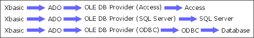

Alpha Anywhere Architecture for Working with Other Databases
Alpha Anywhere provides two different connection methods for reading from and writing to other databases.
ADO (Alpha Five Version 6)
AlphaDAO (Alpha Five Version 8)
ADO Connection Architecture

If you can create an ADO Data Link (using A5_CONNECTIONSTRING()), then you can connect to the database. These are some sample connection strings:
|
Database |
Microsoft SQL Server |
|
OLE DB Provider |
OLE DB Provider for SQL Server (SQLOLEDB) |
|
Connection string |
"Provider=SQLOLEDB.1;Integrated Security=SSPI;Persist Security Info=False;Initial Catalog=pubs;Data Source=SELWYN2400" |
If you see the"Data Source" in the string, this is a clue that the connection uses ODBC.
|
Database |
MYSQL |
|
OLE DB Provider |
OLE DB Provider for ODBC |
|
Connection string |
"Provider=MSDASQL.1;Persist Security Info=False;User ID=root;Data Source=mysqlSelwyn2400Northwind" |
AlphaDAO Connection Architecture AlphaDAO is an alternative to ADO. The principal differences are:
Currently AlphaDAO supports:
See Also |